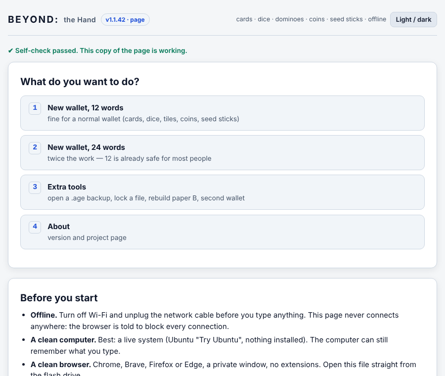
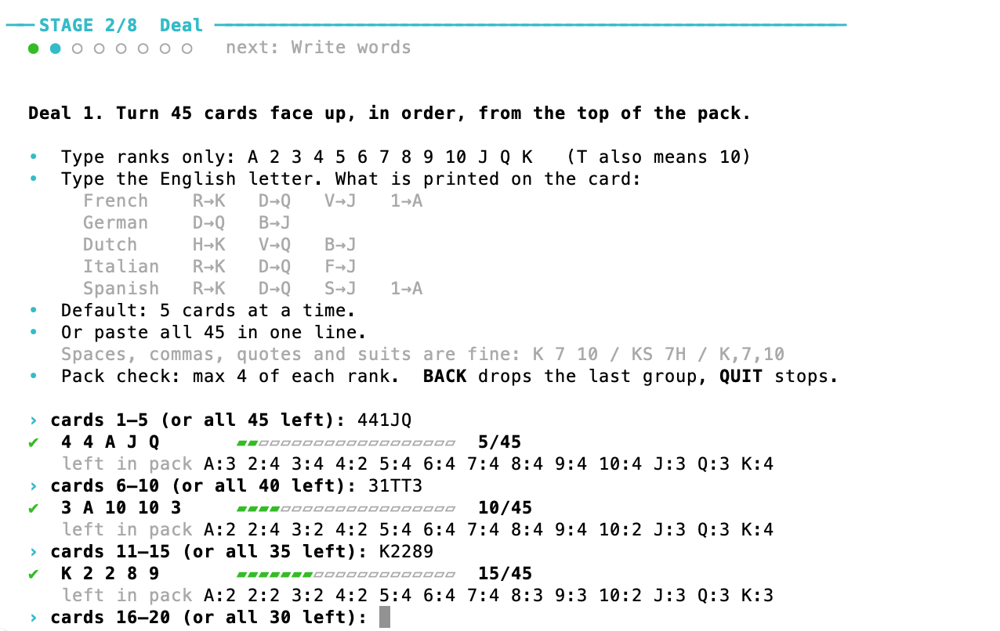

← AVBforge · Amulet Arsenal · Project Meatgrinder (mirror of the one-pager at allesvoorbitcoin.be)
BEYOND: the Hand
Make a Bitcoin seed yourself, offline, with dice, cards, dominoes or coins. Locked in an .age file straight away.


What you get
- A 12 or 24 word BIP-39 seed
- QR code for SeedSigner
- First 3 bitcoin addresses and the zpub
- Everything encrypted at once with age (.age): paper A = seed, paper B = lock words
- Optional BIP-39 passphrase and a word of your own
Entropy sources
- Dice (d6), cards (ranked), dominoes, coins
- SeedPills and SeedSticks, converted offline on the spot
- Buffer mechanisms: choose the mathematical minimum (dice: 50 rolls for 12 words, 99 for 24) or, better, a surplus (64 / 128 rolls)
- SHA-256 mixes everything; surplus draws only add safety
Safe by design
- Offline and open source (MIT)
- HTML page: the browser is told to block every connection (CSP)
- Checksums (SHA256SUMS) for every release file
- The script scans for leftover data as far as possible
Use it
- HTML: open the file in your browser, no install
- CLI: Python script, same method
- Linux, Ubuntu and macOS supported; Windows works but is not recommended
- Best on a live system (e.g. Ubuntu "Try Ubuntu"), Wi-Fi off
Test first. Try it with a throwaway wallet before real sats go near it. Full manual, entropy notes and changelog are in the README and docs.
Download v1.1.42: github.com/avbpodcast/Beyond-the-hand/releases/tag/v1.1.42
All releases: github.com/avbpodcast/Beyond-the-hand/releases
Source: github.com/avbpodcast/Beyond-the-hand
Checksums (SHA-256)
b55dcb10292fe7e8bede41aab96b4e1d1c72d3168ce23a07b5a839fb2f83f19a beyond-wallet-hand.py 2d6e69257a0e130ecc476a6c0b46be73eece41bae7eae45829787934427b61f1 beyond_wallet_core.py ed6138becc7e7e6fcdc89144e751ed741ffcef5f4b6b87043b8554d1f79708a0 beyond-wallet-hand-v1.1.42.html
Check your download: sha256sum -c SHA256SUMS.txt
Not sure how? Use the checksum checker: drop your file in and compare, it works locally in your browser.
Value for value: if this tool is useful to you, support it at allesvoorbitcoin.be/donate